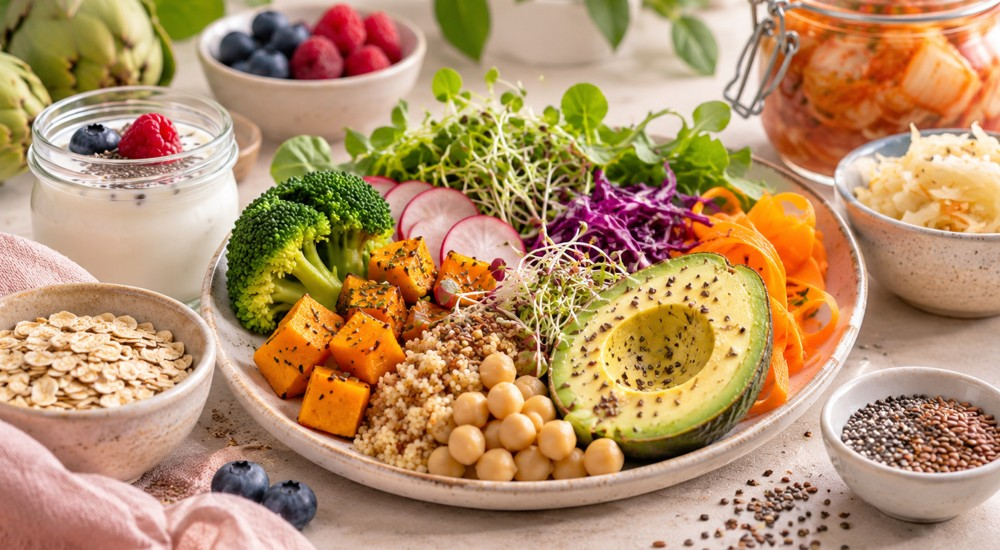

01
GUÍA 01 · INTERACTIVA
Kit Intestino Sensible
Comprende tu digestión y aprende herramientas para cuidar tu bienestar.
Leer guíaUn espacio gratuito para descubrir tu microbiota, comprender tu salud digestiva y aprender a cuidar de ti, a tu propio ritmo.
Explorar las seis guíasSeis guías interactivas, disponibles para leer sin costo.
Comprende tu digestión y aprende herramientas para cuidar tu bienestar.
Leer guíaDescubre el universo de microorganismos que habita en tu intestino.
Leer guía
Explora hábitos de alimentación para nutrir tu microbiota.
Leer guía
Conoce la conexión entre el cerebro y el sistema digestivo.
Leer guíaAprende a distinguir conceptos importantes para tu salud intestinal.
Leer guía
Reconstruye una relación más tranquila con la alimentación.
Leer guíaMi Mundo Microbiota es una iniciativa educativa de Nutricionista Valeria Hernández Flores. Estas guías ofrecen información general y no reemplazan una evaluación ni una atención individualizada.
La salud digestiva es personal. La orientación nutricional puede adaptarse a tus necesidades, síntomas y antecedentes.
Nutricionista · Nutrición Integral
¡Hola! Soy Valeria Hernández Flores, nutricionista con especial interés en la salud digestiva, la microbiota intestinal y la nutrición integral.
Mi propósito es acercar el conocimiento científico de una manera clara, práctica y cercana, para ayudarte a comprender mejor tu alimentación y bienestar intestinal.
Cuento con formación en microbiota intestinal a través del INTA de la Universidad de Chile. Creé Mi Mundo Microbiota como un espacio educativo gratuito para aprender a cuidar tu salud digestiva.
«Comprender tu cuerpo también es parte de aprender a cuidarlo».
Conoce mi Instagram profesional¿Presentas distensión abdominal, molestias digestivas o quieres mejorar tus hábitos alimentarios? Te ofrezco orientación nutricional individualizada, con un enfoque cercano y basado en evidencia.
La información de estas guías es educativa y no reemplaza una evaluación profesional individual.